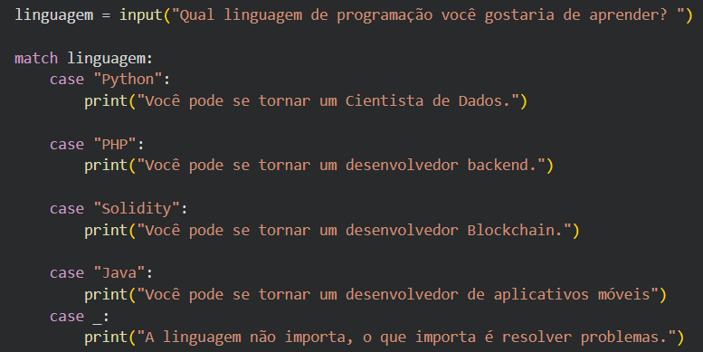

Things I learned in Python

"Case" is used in Python to handle multiple conditions in a more readable way.
- It has the syntax: match variable:
- Then, for each case, you write "case value:" followed by the code to execute if the variable matches that value.
- It's a more elegant and efficient way to handle multiple conditions compared to using multiple if/elif statements.